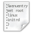

GRUB 2
Willkommen auf der Übersichtsseite zum Thema GRUB 2. Nachfolgend ist eine Übersicht aller Artikel aufgeführt, die sich mit dem Thema GRUB 2 befassen, dem GRand Unified Bootloader der zweiten Generation. Die Aufteilung erfolgte dabei nach den möglichen Fragestellungen, die Schlagworte geben Hinweise zum Artikel.
Hinweis:
Bei Ubuntu wird die Anzeige von GRUB 2 üblicherweise unterdrückt. Möchte man das GRUB-Bootmenü sehen, muss man zu einem möglichst frühen Zeitpunkt während des Rechnerstarts (z.B. direkt nach Ausgaben des POSTs) die ⇧ -Taste (Shift bzw. "Umschalt" für Großschreibung) oder die Esc -Taste gedrückt halten.
| Artikelserie GRUB 2 | |
Grundlagen | Hintergründe, Ablauf, Linksammlung |
Installation | Installieren, Aktualisieren und Sonderformen der Installation |
EFI-BIOS | GRUB unter (U)EFI, Hinweise und Besonderheiten |
 Reparatur | GRUB 2 wieder flott machen |
Konfiguration | Konfiguration |
Aussehen | Aussehen des GRUB 2 Menüs anpassen |
|  Skripte | Eigene Einträge für das GRUB 2 Menü erstellen |
Probleme und Lösungen | Typische Probleme beseitigen |
Terminalbefehle | Wichtige GRUB 2 Terminalbefehle kurz erläutert |
Shell | Einführung in Menü-, Bearbeitungs- und Rettungsmodus sowie Kommandozeile |
GRUB 2-Umgebung analysieren | Grundlegende Daten ermitteln |

Links¶
Bootvorgang - Starten bzw. Hochfahren eines Computers
Bootoptionen - beim Start des Systems bestimmte Funktionen beeinflussen
GRUB Customizer - grafisches Werkzeug zur Bootmanager-Konfiguration
- Erstellt mit Inyoka
-
 2004 – 2017 ubuntuusers.de • Einige Rechte vorbehalten
2004 – 2017 ubuntuusers.de • Einige Rechte vorbehalten
Lizenz • Kontakt • Datenschutz • Impressum • Serverstatus -
Serverhousing gespendet von